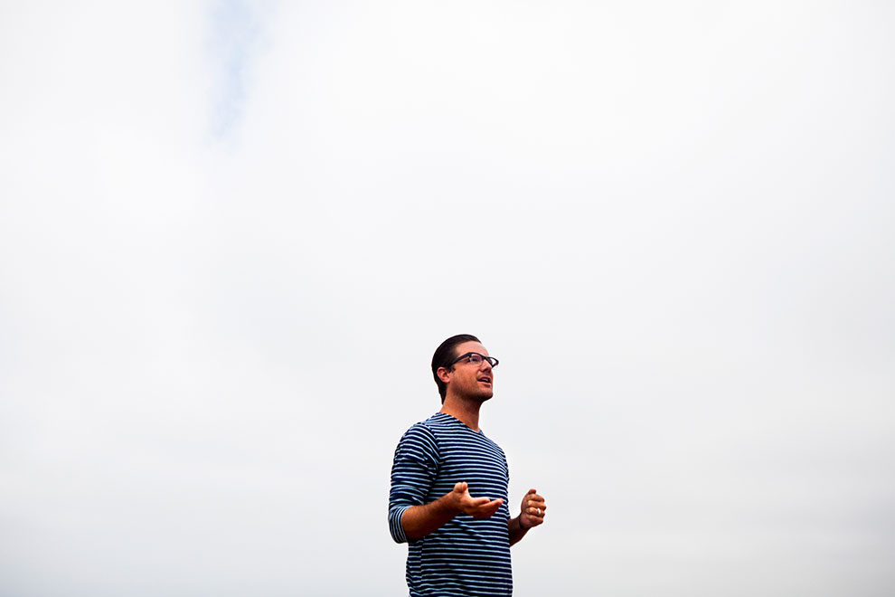

Jason Russell in his office in September. Photograph by Sam Hodgson for BuzzFeed
In March 2012, a human rights organization's documentary about a central African despot became the most viral video of all time, and the ensuing furor resulted in its leader's bizarre public meltdown. On the second anniversary of the phenomenon, everyone involved is still figuring out what it all means.
Jason Russell is tan. Genuinely and exotically tan, even for a lifelong Southern Californian. He almost immediately apologizes for it, explaining that he's just come from a wedding in Turks and Caicos. Later that afternoon, he'll walk through the Barrio Logan, San Diego, headquarters of his nonprofit Invisible Children, burnt and barefoot in a neon orange tank top and shorts, rain whipping the office's industrial windows. The interns will giggle, fondly: "That's a guy who takes his workout seriously."
This is Jason Russell today – 35, training for an Ironman, home every night by 6 p.m., never away from his family for longer than five days a month.
Jason Russell is not the raving man of two years ago, stomping down a San Diego sidewalk, slapping the cement with his bare ass to the sky. But part of him is here too.
"Every day for two minutes, I will think, Oh my god, I had a naked meltdown," Russell says, stretching and snapping a rubber band between his fingers on his glass desk. "I will think that and be like, how did that happen? How in the world is that a part of my story and history forever?"
Russell today is healthy, or says he is. He went to therapy. He was on Oprah's Next Chapter. He's still theatrical and jovial, still prone to hyperbole, still enthusiastically earnest in a way that's completely inspiring to half the world and nails on a chalkboard to the other. But after Russell's psychotic episode, he spent six months figuring out who he was going to be, how and when and whether he would return to the nonprofit he founded in 2004 and nearly brought down in 2012 with the release of "KONY 2012," the most viral video of all time – an impassioned, idealistic call for American youth to make Joseph Kony, the leader of central Africa's militant child-kidnapping group Lord's Resistance Army, in Russell's words, "famous."
"We are not these other organizations that do amazing work on the ground. If you want to fund a cow or you want to help someone in a village in that component, you can do that. That's a third of what we do."
For a majority of the 100 million who viewed "KONY 2012," it was the first time they'd heard of Invisible Children, then an eight-year-old organization with a website that couldn't handle its new traffic.
Information gathering was a free-for-all; here was Jason Russell, the video's narrator, describing Invisible Children as "the Pixar of human rights stories" to the New York Times. There he was telling CNN, "We are not these other organizations that do amazing work on the ground. If you want to fund a cow or you want to help someone in a village in that component, you can do that. That's a third of what we do." Here was a fairly embarrassing musical promotional video for a 2006 event called the Global Night Commute. There was Russell describing his personality: "If Oprah, Steven Spielberg and Bono had a baby, I would be that baby." Here was an appearance on The 700 Club, an interview at Liberty University, and an audio clip of Russell at a Christian conference describing Invisible Children as a "Trojan Horse in a sense, going into a secular realm." And everywhere was the photo of Invisible Children's founders posing with tough faces, guns, and members of the Sudan People's Liberation Army.
The ammunition was boundless and critics ruthless. Counterprogramming was one thing, but character assassination was another, prompting Time magazine's Alex Perry to describe much of the backlash as "malicious online 'takedown,' most of whose participants were utterly uninterested in truth but focused instead on a point-scoring, trashing and hurting, the digital pogrom of the unaccountable, anonymous Invisible Mob."
"I think that's what really made me lose it," Russell says. "They were attacking me personally: my voice, my hair, my face, my family, my friends... I didn't realize what 15 minutes of white-hot fame looks like. And I got to see it. And it is not pretty.
"It's" – he knocks on his desk – "not" – knock – "good" – knock. "It's so dark. I was obviously not sleeping and definitely kind of losing my mind, for sure, but I would seriously start crying when I thought about, like, Lindsay Lohan, or even Sarah Palin, or these people who've been in the spotlight and been ridiculed by everyone in the world. Most people will say out of their mouths, 'Lindsay Lohan should die.' And then I was reading that about myself." After 10 days, it was reportedly "extreme exhaustion, stress and dehydration" that drove Russell to that San Diego sidewalk, and later a hospital on a 5150 involuntary psychiatric hold order. A week later, his wife Danica announced the early diagnosis was "brief reactive psychosis."
And then the conversation stopped – and with it, all the debate, conspiracy theories, and think pieces about Invisible Children's methods and motivations.
Some threads continued, of course, but it was as if the media saw Russell's breakdown and slowly backed out of the room, switching off the lights before comically bolting away.
Russell was marked, even after his recovery tour. The organization was marked too. And yet they both have endured, largely off the millions KONY 2012 brought in, but also because of significant changes made in response to KONY 2012, and a desperately sustained belief that the LRA's end is near – a belief motivated by the fear that if it's not, theirs may come first.
David Ocitti, a former child soldier from Uganda. Photograph by Sam Hodgson for BuzzFeed
Eight years before KONY 2012, there was Invisible Children: Rough Cut, the documentary Russell made after graduating from film school. Russell and his friends Laren Poole, then 19, and Bobby Bailey, then 20, spent months saving money and petitioning family and friends, and their floppy-haired origin story has been told and told again: "All we really wanted, more than anything, was a compelling story," Russell says. They found one – plus a few bouts of malaria.
Rough Cut focuses on "night walkers," or rural Northern Uganda children who used to walk into town each night to sleep in public and avoid capture by the LRA. It largely follows one former child soldier, Jacob Acaye, who watched his brother die after the boy tried to escape.
"We wanted to go to Sundance and be the documentary darlings. And Sundance shut us down," Russell says. "In a way, we were like, 'We don't need no stinkin' Sundance.' I've been [there] enough times to know that even if there are great movies there, they often do not get seen by more than a couple thousand people. And we felt our story was powerful and important enough that we were going to, in a way, force people to watch it."
And so they held screenings on the West Coast, forming a charity with a mission statement to "raise awareness and [educate] the U.S. about the atrocities, exploitation and abuse of invisible children throughout the world." According to financial documents, Invisible Children brought in $331,783 in 2004, its first year. In 2005, as screenings ramped up, the organization made more than $3 million. The founders hired a CFO, Ben Keesey, a UCLA graduate who turned down a finance job at Deloitte and Touche after a post-finals trip to Africa. The money helped take Rough Cut on a national tour in 2006 and produce Global Night Commute, a concurrent rally in 130 cities, where an estimated 80,000 Americans walked to their city centers and slept outside.
As a newly IRS-certified nonprofit in 2006, Invisible Children continued to stage dramatic events, produce short films, and host thousands of screenings, raising money through donations and selling Ugandan-made goods. Celebrities began lending support; in 2007, Invisible Children had a storyline on The CW's Veronica Mars, starring longtime supporter Kristen Bell (and Russell's brother-in-law Ryan Hansen). In 2007, Fall Out Boy filmed a music video in Uganda, and Invisible Children joined Warped Tour.
On paper, business was good; revenue climbed from $7 million in mid-2007 to $8.25 million in mid-2010. Program expenses were divided into essentially two pots: one for U.S.-based events, film production, lobbying, and awareness tours, and another for programs in Uganda, including scholarships, teacher exchanges, and a seamstress program for former LRA abductees. (Generally, the U.S. pot was more full than the Uganda pot, by anywhere from $50,000 to $1.7 million.)
But internally, there were growing pains. "I remember going through a couple painful periods and having to let go of friends," co-founder Bobby Bailey says. "During the summer months, we thought, There's no way we were going to make payroll. We were never good at reaching out to high-level donors to pay for our overhead. Most of our money came from kids buying products."
Bailey left Invisible Children in 2009 – an emotional, messy exit that began with The Rescue, a 100-city event during which participants "abducted themselves" in an attempt to get high-profile figures to voice public support for helping child soldiers. Bailey pushed for it and raised the money, and the event got Invisible Children on Oprah's radar. But Bailey says he was overwhelmed by the planning and implementation of the event.
"These massive events that brought out 80,000 people almost crushed us and killed us, financially but also because we worked people so hard," he says. "To be honest, I couldn't do it. I was tired, I felt frustrated, I was just burnt, and I couldn't figure out how to make the event happen. It was just a big blow to me and my ego."
"It was difficult," goes Russell's version. "I mean, it was just a power struggle. That's all. He's an amazing filmmaker and so creative. But because we're very entrepreneurial, a lot of his ideas wouldn't get traction. And so he was super frustrated with feeling like people wouldn't listen to him."
The Rescue was a turning point for Invisible Children, not only because of Bailey's exit. The organization received substantial media attention for the first time, but also attracted its first major wave of criticism.
"My initial reaction was that it was goofy and self-serving and a disturbing over-simplification of the issues," says Kate Cronin-Furman of the international issues blog Wronging Rights. At the time of The Rescue, she wrote (with co-blogger Amanda Taub) that "choosing to simplistically define … Ugandan children as 'The Abducted' constrains our ability to think creatively about the problems they face, and work with them to combat these problems."
"The cavalier first film did the trick," wrote Chris Blattman, then an assistant professor in political science and economics at Yale. "Maybe now it's time to start acting like grownups."
To Blattman, the "idea of rescuing children or saving of Africa" was "inherently misleading, naive, maybe even dangerous … The savior attitude pervades too many aid failures, not to mention military interventions." Ben Keesey, who became Invisible Children's CEO in 2007, calls this kind of criticism "low-hanging fruit."
"Like, of course it's detailed, nuanced, and complicated how you actually contribute responsibly to seeing an end to a conflict like the LRA," he says. "But the statement that wherever you are in the world, however old you are, you have the ability to help end a war in Africa? I stand by that. And I think it's the necessary statement to actually get a lot of people to do something."
Invisible Children's first legislative victory came in 2010, when President Obama signed the LRA Disarmament and Northern Uganda Recovery Act, leading to the deployment of 100 U.S. advisers in LRA-affected areas in 2011. That year, Laren Poole left Invisible Children to move to Uganda, fundraising and strategizing for the Bridgeway Foundation, which hires private military contractors to train Uganda's army.
"We left the Oval Office after the bill was signed, and we stayed out much too late and were drinking dirty martinis and having the best time," Russell says. "I brought up the question, 'What's the dream for your life?' It's something I always ask people, and Laren said, 'I want to be a Navy SEAL.' And then I started laughing, because we were like, 'Dude, you're always so sick. You're already 29 years old. You're not going to be a Navy SEAL.' And Laren is the type of person that will say, 'Watch me.'"
The move left Russell in full control of the organization's creative direction, which he had always fought with Bailey and Poole over. And as 2011 ended, he was bringing together a campaign that would become bigger than he – a "lifelong dreamer," disciple of Oprah, and permanent summer camp counselor – could have anticipated.
Jason Russel in his San Diego office. Photograph by Sam Hodgson for BuzzFeed
"KONY 2012" went live on Monday, March 5, 2012. Noelle West, Invisible Children's director of communications, switched the YouTube video from private to public – a fairly insignificant moment she may actually remember for the rest of her life.
"I don't know if you've been in a media shitstorm, but I've never been, none of us had ever been, and it was the most traumatic and overwhelming crisis-bringing thing that ever happened to any of us."
The KONY 2012 campaign wanted a youth uprising – through tweets, rallies, and late-night poster blitzes – that would encourage the U.S. government to increase efforts to help Ugandan forces find and capture Kony. The video was told from Russell's perspective, as he explained Kony and the LRA's tens of thousands child abductions to his wide-eyed blond son, Gavin Danger, then 5. Between the versions of "KONY 2012" on Vimeo and YouTube, the 30-minute film received 100 million views in six days – surpassing Susan Boyle's Britain's Got Talent performance (which took nine days to reach 100 million) and Lady Gaga's Bad Romance video (18 days), according to audience data service Visible Measures.
And for a minute there, it seemed to be incredibly well received, particularly if you had any Facebook friends in the 16 - 24 demographic. Rihanna, Justin Bieber, Ryan Seacrest, Nicole Richie, Diddy, and the Kardashian sisters all tweeted their support. In San Diego, one intern in Invisible Children's fulfillment department had 500,000 orders of $30 "action kits" to process. One intern in public relations had 4,000 emails and counting incoming from media outlets. Russell flew across the country for TV interviews twice in 48 hours. But as millions clicked beyond the video, Invisible Children's website crashed. And the lack of information left an incredibly open opportunity for critics to offer counter narratives.
The controversy wasn't a surprise, West says. "But it got too big for us to talk to people who were upset. We've always simplified the issue down to a very understandable, non-academic, non-complex issue, which is offensive to some academics because they think you're trivializing it. But for us, that is just the entry point. We're trying to attract people into this issue but make it accessible for them. 'KONY 2012' was not trying to be a very P.C., well rounded, in-depth piece."
To academics, this simplification was still deceiving, relying more on emotion than facts. Wronging Rights' three-year-old criticism of Invisible Children received nearly 500,000 views in one day. By Friday, a Tumblr called Visible Children had nearly 2.2 million views. The blog's creator, Grant Oyston, wasn't a qualified expert on African issues; he was a 19-year-old Canadian political science student who offered some commentary, but mostly linked out to others' criticism of "KONY 2012." His influence, however, warranted comment from Invisible Children's newly hired New York PR firm Sunshine, Sachs & Associates, who told The Canadian Press that the "things he's written are important but are a little misinformed and naive."
"I thought that was strange. It had this air of, 'You young people don't understand,' but their whole target was young people," says Oyston, who eventually got a call from an "emotional" Russell, offering to fly him to California or even Uganda to see Invisible Children's programs in person. (He declined.) But Oyston still takes issue with being labeled anti-Invisible Children, admitting the charity has done some good work, and finds himself criticizing the entire cycle of KONY 2012 – praise, backlash, and all. "I found it troubling how quickly people read my criticism and other more informed critiques and responded by giving up and not caring," Oyston says.
"This video made them excited about helping victims and then they read something on a blog and they said, 'Never mind.' I found that disheartening. " No one denied that Kony was a criminal who should be brought to justice, but many were critical of the call – from young, white Americans – to help Uganda address a problem already generally thought to be resolved in that country. Uganda's government spokesman even issued a statement: "Misinterpretations of media content may lead some people to believe that the LRA is currently active in Uganda. It must be clarified that at present the LRA is not active in any part of Uganda. Successfully expelled by the Ugandan Peoples Defence Forces in mid-2006, the LRA has retreated to dense terrain within bordering countries in the Central Africa area. They are a diminished and weakened group with numbers not exceeding 300."
Michael Wilkerson, a freelance writer and one of KONY 2012's earliest critics, encouraged KONY 2012 supporters to consider the "potential collateral damage."
"In previous offensives by the Ugandan military that didn't quite catch Kony, what [happened] was the LRA ransacked and massacred vengefully as it fled, killing hundreds of civilians in the Congo in the winter of 2009," he told NPR.
Others were offended by the portrayal of Uganda, down to the word "invisible," including writer Dinaw Mengestu: "To claim [the children] were invisible because a group of college students traveling through Uganda happened to stumble upon a war they were too ignorant to have known of before going to the region is, to put it mildly, patronizing. By the time the organizers arrived in Uganda and created Invisible Children, northern villages such as Gulu were crowded with NGOs and aid workers and the largest humanitarian concern, by far, was the housing conditions of the more than one million people living in camps for the internally displaced."
"That's a tough one to talk about," Keesey says today. "Of all the critiques that we got, it was the one that I never saw coming. Is Joseph Kony, who's the world's most prolific child abductor, worthy of a campaign to stop him? Is that a worthy pursuit? To see the LRA disarmed and to see these communities free from fear? That one took me off guard."
Two weeks after "KONY 2012"'s release, Teju Cole wrote in The Atlantic about the "white savior" who "supports brutal policies in the morning, founds charities in the afternoon, and receives awards in the evening," and those who financially support him – without considering U.S. foreign policy's role in the conflicts that yield large aid movements, or the wishes of those receiving the aid.
"I disagree with the approach taken by Invisible Children in particular, and by the White Savior Industrial Complex in general, because there is much more to doing good work than 'making a difference,'" Cole wrote. "There is the principle of first do no harm. There is the idea that those who are being helped ought to be consulted over the matters that concern them."
Cole's analysis was smart and personal without overt hostility – something other critics couldn't resist, particularly when it came to Russell's role in the film. It resonated, and when talking about the backlash today, Invisible Children staff still cite the phrase "white savior industrial complex."
"Our biggest mistake," West says, "was we should have had supplementary materials that showed how much we really know. We should have had that secondary video that has all of our regional staff who are in fact from the regions in which we operate. It's not a bunch of white California kids out in the region. These are professionals who have lived through this conflict their whole lives. We should have had that stuff in front when people came looking, but we were just too underwater to even figure that out."
Photograph by Sam Hodgson for BuzzFeed
Russell says he still hasn't grasped how many people saw the clip of his naked rant. (Somewhere around 4.5 million, only counting the most popular versions on YouTube.) But he's distinctly aware of the mark it left on Invisible Children's internal culture. On his office bookshelf, next to thick, beat-up journals from his first Africa trip, Russell has a blue binder, where dozens of cards and press clippings and notes from friends and strangers and co-workers are collaged together. On the cover of the binder is a cut-out headline from Entertainment Weekly: "This was the year that… EVERYONE GOT NAKED." The article didn't include Russell, but he thought it was funny anyway.
"Coming back to work," Russell says, "I think it was strange to hear a lot of people be like, 'I was gonna move on, I was gonna get another job, I was gonna stop the internship, but I'm here for you to make sure you're OK. I've stayed here for a year to make sure you're OK.'"
On his first day back, one of Invisible Children's writers wrote him a letter, which he picked out of all of the notes to show me:
"Welcome home. I've literally had dreams about this day when I would see you for the first time in Noelle and Heather's office – slow motion hug and tears – and now my literal dreams are literally coming true. A couple things I didn't realize about you 'til you weren't in the office anymore: Your ideas and designs push the envelope, yet you have the key skill of getting people on the same page in spite of your ideas' extremity. You break convention but somehow make peace and bring everybody together over it. I miss that."
"She's saying, 'I dreamt of you coming back,' and I'm not even like that good friends with her!" Russell laughs. "I just … Yeah. I feel most at home here, so I always felt like I would come back if they would have me." Was that a question?
"Obviously if someone does what I did, they're getting advice from a lot of people saying distance yourself as much as you can, 'cause he's really the thing that took the campaign off the rails. So I think they had to really think about what my position would be like, get a lot of advice, and figure out if it could work."
Russell and I spoke for an hour before he made any reference to his faith, and only when I asked. In the past, he's talked openly about his evangelical upbringing and its influence on his life and work – Russell's parents are the founders of the national chain Christian Youth Theater; he and Poole and Bailey are definitive Christian bros. But after several critics accused Invisible Children of being a secretly religious and even anti-gay organization – including an Atlantic story accusing Russell of "secretly pulling our consciences towards Jesus" – he has notably scaled back the God talk. In October, when he was at Catalyst, the annual church leadership conference, Russell says he turned away questions from a Christian Science Monitor reporter who approached him.
"I feel so manipulated by people who think, I'm gonna get the scoop because I think he's secretly trying to do this spiritual thing. Like if we really were the illuminati, how much more exciting would your article be? If we're working with Jay Z? We're in a homeless neighborhood – give me a break, we're not illuminati."
Russell says he watches service on TV and goes to church once in a while, but not on a consistent basis.
"Maybe this is a cop-out, but if you want to know about my spirituality, I'll totally tell you. I can talk about my faith. I'm not afraid of it. But Invisible Children is not a faith-based religious organization at all. People forget that something like 80% of Americans call themselves a believer in God … So to have like 30% or even half of our staff have some kind of faith is just a demographic. No one's trying to push an agenda."
Russell believes – of course – that everything happens for a reason. On his bulletin board is a printed-out email from Oprah (her email address blacked out, much to certain visitors' chagrin). Russell wrote her last year after reading that she recognized the symptoms of her own nervous breakdown after interviewing him.
"Hi Jason, I received your beautiful letter," he says, more performing her email than reading it out loud. "Isn't it beautiful how we're all angels for each other and messages to heal come in all forms? Thank you for taking such fine care and reaching out to me. I hold you in the light – exclamation point!" "So you saved Oprah?" I ask.
"For me, it's like, OK, my breakdown was a shitshow. We all know that. But I can't tell you how many people have come up to me and said, 'I've had a breakdown. I'm on this medicine.' It's this dark secret that we're all struggling with our mental health, and I think we should be vulnerable and honest and tell the truth. If my next 10 years ends with having to do with mental health or encouraging a generation to be real and honest – it's the only way you're gonna get free – then the breakdown was probably necessary for me to become something of an expert."
Russell speaks to roadies and staff, kicking off a tour at San Diego's Mt. Soledad Veterans Memorial on Sept. 17, 2013. Photograph by Sam Hodgson for BuzzFeed
Ben Keesey, a towering 30-year-old with slicked-back hair, likes conversation; he wants to know about your day, where you grew up, and what your job is like. But he bounces, sometimes ungracefully, between youthful energy and political pragmatism, stuck between a world of San Diego interns who end every sentence with "awesome," and D.C. lawmakers who don't. He is relentlessly idealistic, a trait he embraces despite how often it's been used against him and Invisible Children.
After KONY 2012, Keesey would say during interviews, "How do I show you my sincerity? How do I just show people my actual heart? Can they just tap into it for 10 minutes, so they can see we really do care about the people we work for?" "There are times when I get sad," Keesey says. "Because a lot of the concerns or skepticisms that we weren't able to overcome put a lot of people on the sidelines that I believe want to be involved. At times, I actually personally process it as feeling very responsible and saying, 'What more could I have done? Did I fail? Did I fail this organization and this cause by not being able to properly justify our actions or our integrity?' It's a very heavy burden on my heart."
In the controversy's aftermath, Invisible Children had difficulty booking school tours for the first time in years. The money wasn't there like it used to be, with young fundraisers experiencing resistance – "from their families, their friends, people spitting on them, people calling them liars, people calling them stupid, they don't know what they're talking about," Russell says. "Before KONY 2012, our organization was predominantly seen as, Good job! You guys are inspiring, keep going, we believe in you. And all the sudden it flipped on its head – You guys are liars, you're a scam factory, you're fake, you're embezzling the money, or whatever."
By mid-2012, Invisible Children had nearly $26.5 million in revenue and $17 million in net assets. By mid-2013, the organization had $4.9 million in revenue (their lowest since 2005) and less than $6.6 million in assets. Sixty-five employees in the San Diego office became 29. Two floors of a building became one. About 130 staffers in Africa – 95% of them from the region – became 108.
And yet, KONY 2012 was objectively the organization's most successful campaign ever, both in its mission – making Kony famous, even if on the other end of punch lines – and in policy.
On April 20, 2012, when KONY 2012 supporters were supposed to "cover the night," a directive from the film to blanket city centers in posters and other anti-Kony propaganda, turnout was abysmal. But that month, President Obama announced the extension of a military advise-and-assist mission to central Africa. The European Union, as part of a declaration of support, established a Joint Operations Centre to assist central Africa's counter-LRA regional task force. On Capitol Hill, Invisible Children's reputation went from "very young film students" to issue experts invited to White House roundtables, according to The Enough Project, a policy-focused group that says it helped Invisible Children overcome "stumbling blocks" in its early lack of expertise. In January 2013, Congress passed the Rewards for Justice Bill, authorizing $5 million for information leading to Kony's capture. It was at the bill's signing in the Oval Office that Keesey asked Samantha Power, the U.S. Ambassador to the United Nations, to speak at the 2013 Fourth Estate Summit, Invisible Children's second-ever conference of more than 1,000 supporters. She accepted, starting the speech – her first since being appointed ambassador – with "O.M.G."
"KONY 2012 created the most opportunity and movement around this issue more than all the eight years before it combined," says Noelle West, who spent a not insignificant amount of her time immediately after KONY 2012 responding to critical comments on charity database GuideStar, Reddit, and social media networks. "To know that's what happened and still feel punished for it is strange."
"It was game changer for the profile of the issue and for the movement at the international level," Keesey says. "It's absolutely caused us gigantic organizational challenges, personal challenges, ones that we're still working through. But I think on balance, net net net to the mission, it was helpful. And from that standpoint, I would do it again."
There are regrets, of course, in how the backlash was handled. From all vantage points, Invisible Children didn't know how to talk about itself. The messages – and messengers – weren't consistent.
Grant Oyston (and many others) cited his fundamental problem with Invisible Children as "their relentless focus on advocacy over action," a criticism heightened by Invisible Children's director of ideology Jedediah Jenkins' post-KONY 2012 comment that "we are not an aid organization, and we don't intend to be. I think people think we're over there delivering shoes or food. But we are an advocacy and awareness organization." (Later in March, a video of Jenkins joking around and drinking – or pretending to drink – while celebrating Invisible Children's $1 million grant from Chase Community Giving made it to TMZ. Jenkins has since taken a break from the organization to go on a bike trip from Oregon to Patagonia.)
"That comment is a bit of a half-representation of even who we were in 2012," Keesey says. "But at the same time, this conversation in itself illuminates the challenge that we have describing who we are, because who we are has changed, and changes and will change."
Still, accusations surrounding the organization's financial integrity remain the stickiest: that so much of its money is spent on travel and film production, that so little is spent on overseas programs, that it kept money from the KONY 2012 action kits.
"We were very much accused of financial impropriety," Keesey says. "The feeling of potentially being scammed is one of the worst feelings in the world. And it's not possible to reach back out to the amount of people that heard that message in the wake of KONY 2012 for them to feel rock-solid confident that we do get our finances audited every year, and 100% of our audits have come back with an unqualified opinion. We've had no legitimate cases or even accusations of actual fraud. That doesn't exist."
COO Chris Carver says when Invisible Children tried to explain its finances, he wishes he had "put out not just the literal components, but how much we felt this strategy was important, this allocation of funds to domestic education versus international operations – how much we believe in that."
And yet Invisible Children substantially reallocated funds last year, spending about $4 million in the U.S. on media and mobilization efforts and nearly $7.8 million on Uganda recovery and protection programs, according to its annual IRS filings. The only other year Invisible Children gave more money to Uganda than the U.S. was in fiscal year 2009, but the difference was just under $750,000. This reversal was Keesey's direction, made with consultation from the staff in Africa.
According to independent evaluator Charity Navigator, Invisible Children has spent at least 80% on programs since 2009, contradicting a widely circulated 32% figure that one interpretation of their finances (which discounted U.S. educational programs) yielded during KONY 2012. But Charity Navigator's accountability rating of Invisible Children in 2011 – two of four stars – was another reason the organization's finances were called into question, and largely a result of Invisible Children not having enough independent voting board members at the time. The rating was restored to four stars in 2012, after more members were added. (Invisible Children was also questioned for not filing with the Better Business Bureau, another voluntary measure of nonprofit transparency. Carver says the "Better Business Bureau stamp was just something that we haven't gotten around to doing, because it takes a lot of time.")
Carver estimates this year's revenue will continue to be lower than Invisible Children's past highs. There can never be another surprise Susan Boyle performance, and there can never be another KONY 2012, which cost in total $2.8 million. The organization very simply doesn't have the resources, financially or emotionally: "To fool ourselves into thinking that we're gonna convince the world that this is different is not the best use of our time," Carver says.
Invisible Children's only fundraising campaign in 2013 was ZeroLRA, which Russell calls "the least inspired I have been and everyone around here has been, even though we worked our butt off to make it happen and inspire our fundraisers and supporters."
The problem comes down to originality, Russell says. Invisible Children has been telling stories about the LRA's abductions for 10 years, over 12 documentaries. "How many different ways can you cut the cake? How many different ways can you actually approach the conflict and keep it fresh and exciting?"

Photograph by Sam Hodgson for BuzzFeed
The most important question, two years on: How did Invisible Children spend its KONY 2012 millions?
The answer: mostly on what it considers attack-prevention programs in known LRA activity regions, including one that uses helicopters to drop defection fliers – "truth campaigns to psychologically woo them," as Keesey says, out of the jungle and to safe-reporting sites. Of last year's 83 known defectors, 79% referenced the fliers, Invisible Children says. (In December, 19 LRA members defected together, the largest mass defection since 2008.)
Invisible Children has also been investing in data-gathering since 2010, when it launched the LRA Crisis Tracker, broadcasting LRA movements and attacks based on information relayed via 71 high-frequency radios. The community reports are vetted through regional experts and updated to the tracker twice daily. The tracker provides an email subscription service, which Invisible Children says is used by state and military officials in the U.S. and central Africa, local communities, and other NGOs, including those providing health services to rural communities.
Invisible Children's community-improvement programs in Uganda – the "recovery" piece of the organization's four-part model – have expanded and matured, too; there are now 401 students enrolled in its legacy scholarship program, up from the 135 in its inaugural class, and 4,025 adults enrolled in the village loans and adult literacy programs, up from 400 in its inception. (When asked for their opinions on these recent developments, many critics of "KONY 2012" told BuzzFeed they haven't kept up with Invisible Children since the controversy two years ago.)
This year, Invisible Children will go after grants from government and philanthropy groups, like the U.S. Agency for International Development and the LRA Fund, a small group of foundations supporting projects in LRA-affected communities. Keesey says the organization needs about $6.2 million this year to continue its programs and keep the lights on. Some of that will come from Invisible Children's 10,230 monthly donors (with help from interns who make hundreds of calls a week) but not enough. The staff has come to accept that.
"We don't need the masses, the gigantic grassroots movement, as much as we have in the past," says West. That may change from time to time – Invisible Children is pushing an upcoming Senate resolution encouraging Obama to "finish the job and not reduce the amount of resources or commitment until we see a full dismantling of the LRA," and will ask supporters in key districts to call or write to their senators.
But the reality is that Invisible Children can't survive off the masses anymore. There will be no films or campaigns or tours this year – no 10-week trips led by interns (or "roadies") screening films and spreading the word of Invisible Children around the U.S. There will be no large-scale Fourth Estate Summit, either – the conference Russell once described as "a TED talk, mixed with a music festival and a film festival, all mixed in a Justin Bieber concert," with an average attendee age of 16. That means no 1,315 kids in T-shirts and bracelets spending $325–495 each, and no "spectacular wink and a nod to showmanship," as Bobby Bailey, who attended the summits in 2011 and 2013, puts it. (There will be a smaller version of the event this year, an Invisible Children spokeswoman told BuzzFeed after this article's publication.) Maybe Invisible Children will never return to that kind of showmanship; maybe it will never be able to afford to.
This scaling back has brought a certain restlessness to San Diego. Russell hasn't been to Africa in two years; "There hasn't been a real need for me to go out," he says, with dozens of workers already on the ground. His next trip will likely be when Kony is caught or killed and the LRA is disbanded. Then, Invisible Children will either close its doors or change into something else entirely, with a different mission and different players.
"We all want to go do other amazing things at some point in our life, and we don't want to hold ourselves back from that," Carver says.
In "Move," Invisible Children's first film after "KONY 2012," West says she was afraid that the backlash and Russell's breakdown was the "beginning of the end … What if all this time we spent, all these things we built, are just, done?" It was certainly an option in 2012, but despite all its losses, Invisible Children wants to "work to put itself out of a job," or so goes its spin line.
"I would love to shut the doors," says West, who's transitioning from communications director to an in-house consultant for companies seeking advice on viral campaigns. "I would love for there to be a big black screen when you come to IC.com after Kony is caught and there's a process in place for rehabilitating the region so the LRA can't come back. I would love for IC to be turned off. Why do you need us anymore? That's just me, though."
West wants to build furniture. Keesey is mulling over going back to school for sociology or psychology. Russell's future may lie in some form of mental health advocacy – a field that may be a little more sympathetic to his intuition to put himself in his stories.
The 10 years they've spent on this single issue, maintaining all that swaggering idealism, has left the staff in a state of constant anticipation. They firmly believe the LRA's demise is within sight and that they get closer every day to someone, somewhere, spotting Kony. And with that expectation comes an even stronger hope for vindication.
"It would be such a big deal. And people would come back to the cause and say, 'Yeah I've been supporting you all along. I wanted Kony to be captured too,'" Russell says. "We definitely know that we need that win, and that the future of Invisible Children and the cause and the work that we do is completely reliant on believing that the win will happen soon. If he's captured or killed in 2024, I would have a hard time believing we could sustain the narrative for much longer."
Russell says there's only one film he's working on, currently plotted out on his big office whiteboard: the one he'll release when Kony is gone. Whenever that is.